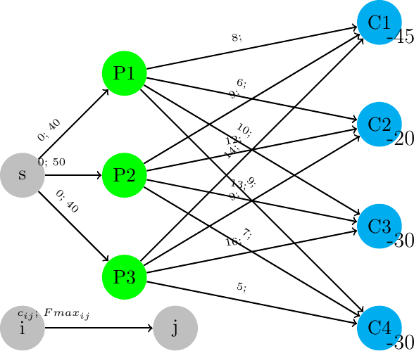
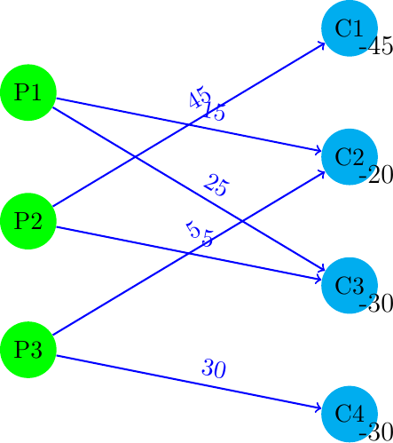

\(\newcommand{\R}{{\mathbb{R}}}\) \(\newcommand{\Z}{{\mathbb{Z}}}\) \(\newcommand{\N}{{\mathbb{N}}}\) \(\newcommand{\var}[1]{{\color{red}{\mathbf{#1}}}}\) \(\newcommand{\param}[1]{{\color{blue}{#1}}}\) \(\newcommand{\mathsc}[1]{{\normalfont\textsc{#1}}}\) \(\def\sc#1{\dosc#1\csod}\) \(\def\dosc#1#2\csod{{\rm{#1{\rm\small #2}}}}\) \(\newcommand{\set}[1]{{\sc#1}}\) \(\newcommand{\mathvar}[1]{\var{#1}}\) \(\newcommand{\half}{{\small{\frac{1}{2}}}}\)
9. The transportation model¶
The transportation problem is a classic network flow problem, used frequently in the planning of shipments from various sources (production) to different recipients (wholesalers, shops, distributors, warehouses, final customers). Assume that between some source and some destination an arc is present, which represents the possibility of shipping from that source to the specific destination. Assume also that the cost of shipping a certain commodity is proportional to the shipped quantity. Then the problem arises of how to allocate available products to the recipients so that the total transport cost is minimized. The constraints typically represent the finite production / shipping capacity of each source node and the demand to be satisfied at each destination node. Sometimes there is also a limit on the flow over specific arcs.
This problem is the simplest possible version of a very relevant logistic problem. The most important simplification in this model concerns the cost structure: here it is assumed that the costs are proportional to the quantity of shipped goods. This is reasonable, but only in certain contexts: for example, if the “transport” consists in data shipment over a telecommunication network, then, as a first approximation, it might be reasonable to imagine that the assumption is valid, as doubling the amount of transmitted data corresponds, on average, to doubling the transmission time and, frequently, the cost that the user is charged for the usage of the communication line increases proportionally to the time. Similarly, when shipping is made through external couriers (third parties) who charge in proportion the distance traveled and the mass of the material. Or, in a different context, it might be reasonable to apply this cost model to decisions on the electricity supply: the cost connected with the transport of energy might be proportional to the distance traveled and the amount of carried energy.
A radically different situation happens if the optimal plan needed to take into account the cost of trucks used in transportation: in many cases, usage of a truck implies different costs: the cost of transportation might be considered as more or less constant, or justly weakly increasing (as a consequence of th fact that the higher the transported mass the higher will be the cost of fuel); this proportionality will have a break, a discontinuity, as soon as the shipped quantity will exceed the truck transportation capacity: in this case a new truck would need to be acquired, or rent, with a sudden increase on costs. In cases like this one the problem is no longer the classical transportation problem, but it is known as the “vehicle routing” one and will be discussed later in this volume.
Consider a bipartite graph \(G = \langle V, E \rangle\); recall that a graph is called bipartite if its nodes can be divided into two disjoint subsets (a bi-partition) \(V_{1}, V_{2}\) so that each arc has the start node in the first set and the end node in the second one. That is, the bipartition of nodes must be such that:
For the transportation problem, the two sets correspond to the source and destination nodes. The linear transportation model has the following form:
- model
Transportation model
\(\set{Orig}\): origin nodes
\(\set{Dest}\): destination nodes
\(\set{E} \subseteq \set{Orig} \times \set{Dest}\): set of direct connections between origins and destinations
\(\param{Pr}_i\): upper bound on the production capacity (or on the available quantity of finished products) of node \(i \in \set{Orig}\);
\(Dom_j\): demand of destination \(j \in \set{Dest}\); it represents the exact quantity of goods that recipient \(j\) requires;
\(\param{Cost}_{ij}\): unit transportation cost along arc \((i, j) \in \set{E}\)
\(\var{f}_{ij}\): quantity of goods to be shipped along arc \((i, j) \in \set{E}\)
Demand satisfaction:
\begin{align*} \sum_{i \in \set{Orig}: (i, j) \in \set{E}} \var{f}_{ij} = \param{Dom}_j && \forall \, j \in \set{Dest} \end{align*}It is assumed here that all the demand needs to be satisfied, although it would be simple to modify the model to include this possibility;
Maximum production constraint:
\begin{align*} \sum_{j \in \set{Dest}: (i, j) \in \set{E}} \var{f}_{ij} \leq \param{Pr}_i && \forall \, i \in \set{Orig} \end{align*}(goods shipped from each producer cannot exceed the maximum production, or the availability)
Non negativity: \(\var{f}_{ij} \geq 0\) for every arc;
Minimization of the overall transport cost:
\begin{align*} \min \sum_{(i, j) \in E} \param{Cost}_{ij} \var{f}_{ij} \end{align*}
Although it might not be immediately apparent, this model falls within the class of minimum cost flow models. In fact, the objective function is the same as that of the minimum cost flow problem. For what concerns balance constraints, those associated to the demand are exactly flow balances (for arcs with no outgoing arc). However, the constraints on production nodes are inequalities. But if we add a slack to transform them into equivalent equations:
then it is possible to interpret this as a balance constraint, with the slack variable \(s_i\) representing a flow that, at zero cost, goes from node \(i\) to a virtual deposit whose demand is equal to the difference between the maximum total production and overall demand. Thanks to this interpretation, the model inherits all properties of the minimum cost flow model, including the integrality of optimal solution if maximum production and demands are integer. This property, which is very desirable in general, is particularly important here as it implies that no parcel needs to be subdivided into parts.
It is also possible to formulate the same problem introducing, as we did in the mixed production/transportation example, a single source node connected with all sources, with arcs whose maximum capacity corresponds to the limit on the productive capacity of each node.
- application
Transport of electricity
An energy company owns various plants, located in different areas of a region, and wants to determine a minimum cost shipping plan of the produced energy to the main cities of the region. Assume that the company owns three plants whose maximum production (in millions of kilowatt/hour) is given by the following table:
\begin{align*} \begin{array} {| lc |} \hline \textrm{Plant} & \textrm{Max production} \\\hline \textrm{P} 1 & 40 \\ \textrm{P} 2 & 50 \\ \textrm{P} 3 & 40 \\\hline \end{array} \end{align*}while the destination cities have the following demand
\begin{align*} \begin{array} {| lc |} \hline \textrm{City} & \textrm{Request} \\\hline \textrm{C} 1 & 45 \\ \textrm{C} 2 & 20 \\ \textrm{C} 3 & 30 \\ \textrm{C} 4 & 30 \\\hline \end{array} \end{align*}Finally, the shipping cost of one million kilowatt / hour from the plants to the destination cities is reported in table:
\[ \begin{array} {| lcccc |} \hline & \textrm{C} 1 & \textrm{C} 2 & \textrm{C} 3 & \textrm{C} 4 \\\hline \textrm{P} 1 & 8 & 6 & 10 & 9 \\ \textrm{P} 2 & 9 & 12 & 13 & 7 \\ \textrm{P} 3 & 14 & 9 & 16 & 5 \\\hline \end{array} \]Graphically, this transportation problem can be represented as follows:

By solving the problem, an optimal solution can be obtained, with a total cost of 1005, with the following structure:

where it can be seen that plant 3 does not use its full production capacity.
As we have seen, in the transportation model, each shipment takes place from producers to consumers: the graph of the transportation network is indeed bi-partite. Some variants of the model are possible which allow cumulative transport to multiple destinations. In this case it could be convenient to send a quantity from a single origin to satisfy the demand of two or more destinations, allowing for the delivery to one of them and then to the others. In this extension there will be transportation arcs connecting multiple destinations to each other. Similarly, we might think to the case where goods are loaded in a plant and, before delivery to customers, goods produced in other plants are collected: there are therefore arcs which connect origin nodes. The inclusion of these arcs turns the transportation problem into a generic minimum cost flow one.
Another very important variant arises when considering temporal dynamics: a transportation model in which planning includes several days or different periods; decisions associated to two consecutive time periods are connected through an inventory. The quantity produced in a period \(t\) which is not sent to any destination becomes an input, ready for shipping, for the period \(t + 1\). In a similar way, it might be useful to model situations in which the demand cannot be satisfied by current production or by the available inventory. In this case the demand constraint becomes a “soft” one, which can be violated, although at a cost. This can be represented in a network by adding transportation arcs which run “backward” in time from production nodes to destination ones: an arc from a producer at time \(t+1\) to a destination at time \(t\) represents a demand which can be satisfied with one period delay, if needed. Usually these backward arcs have a higher unit cost to represent penalties for demand which is satisfied after the correct period.